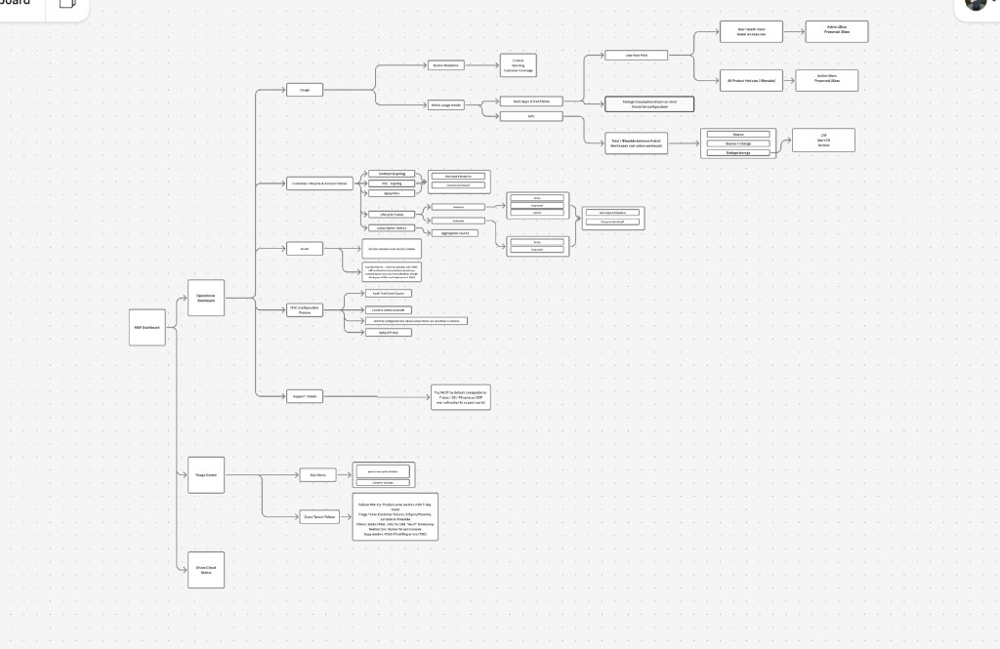
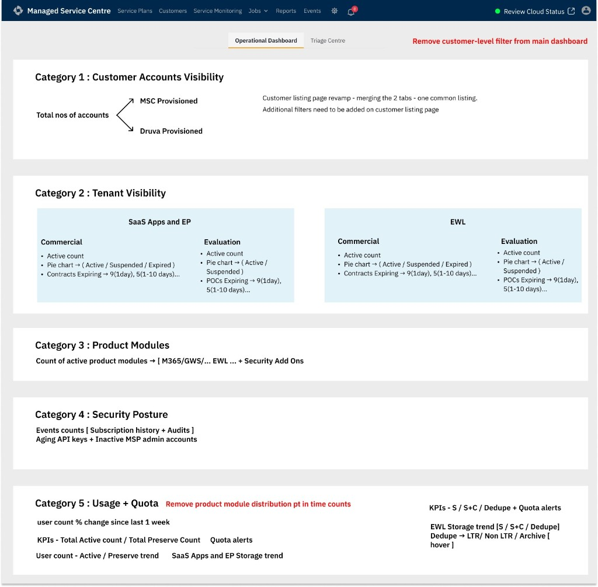
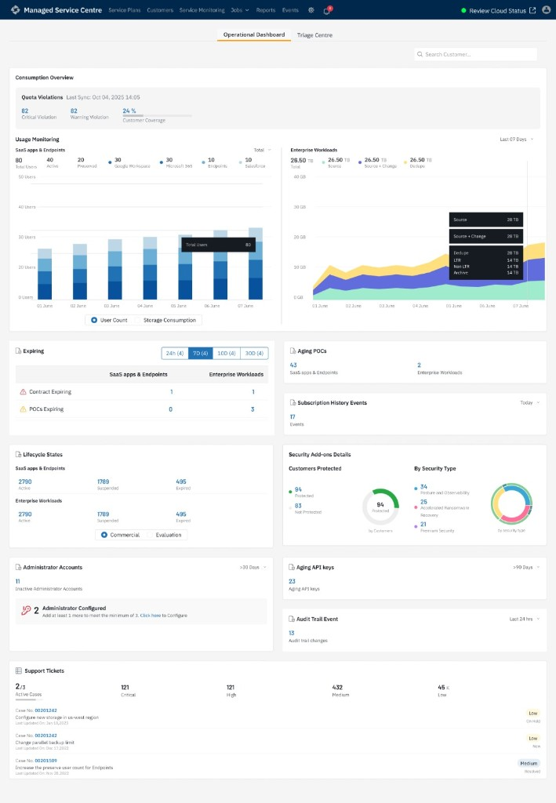
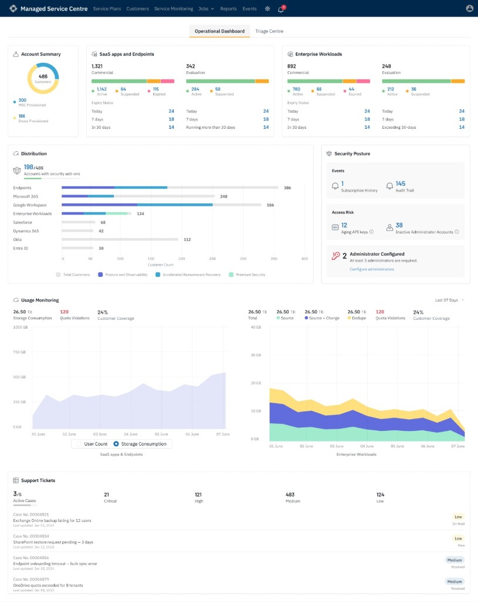
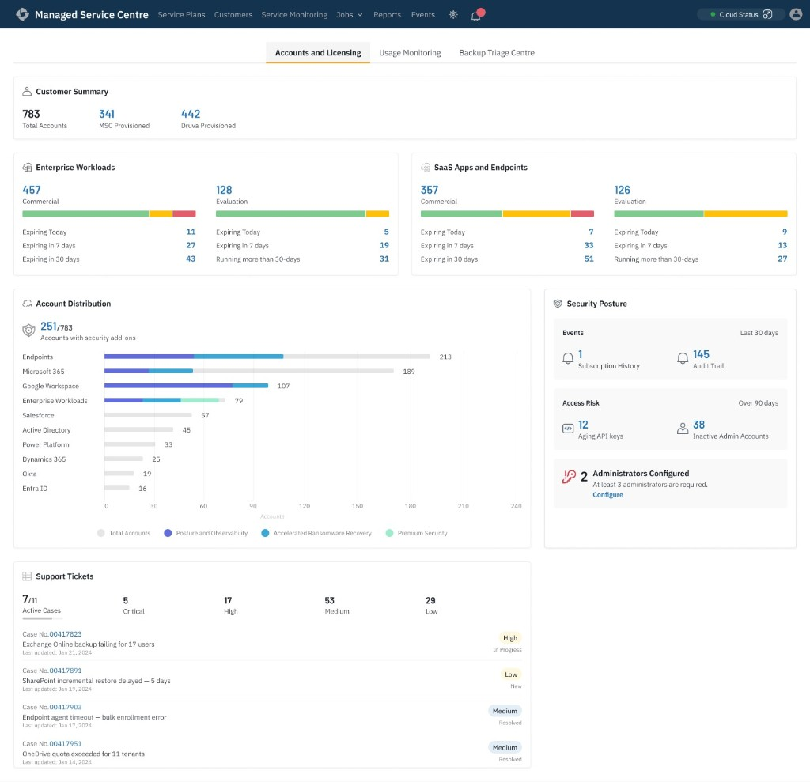
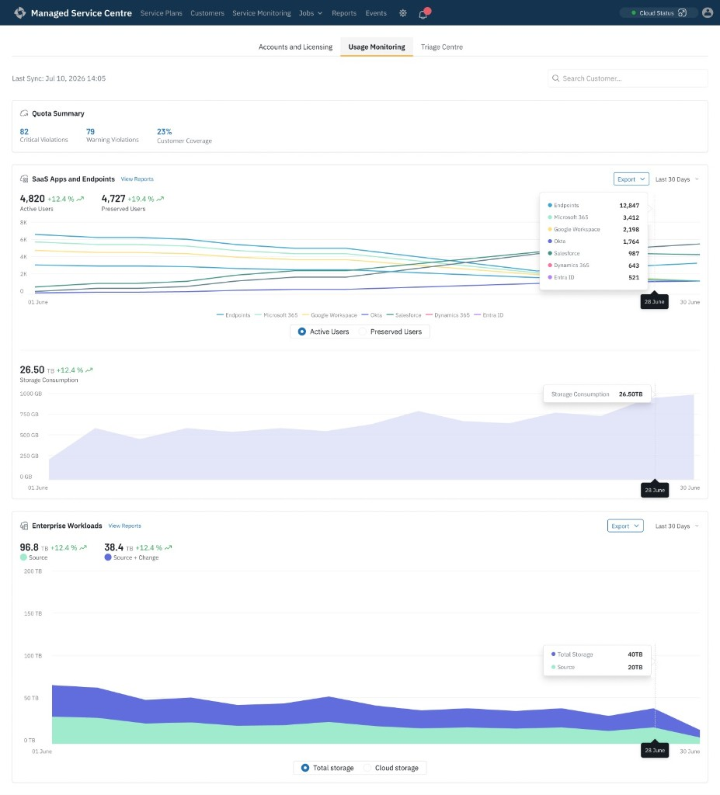
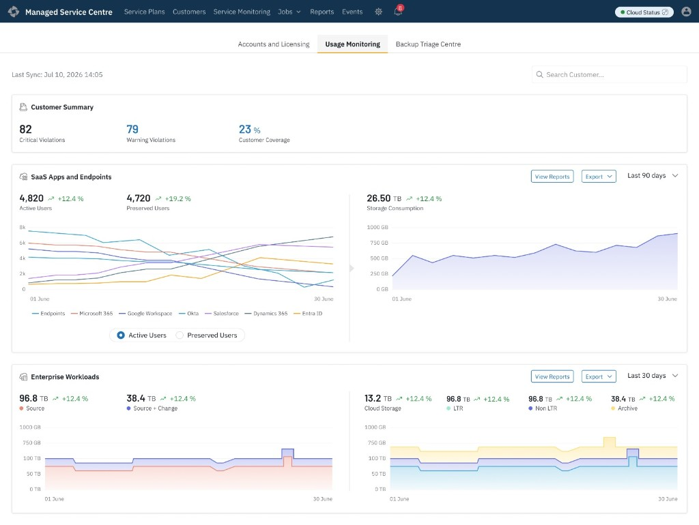

Designing a new home screen for Druva's Managed Service Providers (MSPs). The goal was to build a single page showing backup problems, storage usage, expiring licenses, and security risks across all their clients—eliminating the need to check each customer individually.
A Managed Service Provider — a partner company that manages backup, security, and IT operations on behalf of multiple end-customers, rather than each customer managing it themselves.
Druva's Managed Services Center — the operational portal MSPs use to monitor and manage backup health, licensing, and security posture across every customer they support, from a single login.
MSPs were checking each customer account individually to spot backup failures, storage spikes, expiring licenses, and security risks. This project replaces that fragmented workflow with one consolidated operational dashboard — a single home screen that surfaces what needs attention across every client at once.
Alex manages backups, customer accounts, and security for the MSP across every client they support—all from one login.
Different types of users require different data views on the exact same screen architecture. If a user doesn't have permissions, the layout cannot look broken or empty.
| Component | Full Admin | Limited Admin |
|---|---|---|
| Dashboard View | Sees data for every customer | Only sees their assigned customers |
| Failure Triage | Can view and fix issues for any customer | Can only fix their assigned customers |
| Security Widget | Can see and dismiss security risks | Cannot see this section at all |
| License View | Sees license data for all customers | Sees license data for their own customers only |
In enterprise B2B products, starting with UI boxes leads to feature bloat. Before opening Figma, I mapped every piece of information the system generated into a master tree diagram.

Putting every metric on a visual map forced hard conversations early. We reviewed this map with internal Customer Success teams to ensure we weren't missing blind spots. It stopped subjective arguments about "how a chart should look" and forced us to debate "does the user actually need this number?"
Reviewing the map against how admins actually described their day surfaced four distinct workflows, each operating on a different timeline:
When you put real numbers and bright charts into a wireframe too early, people get distracted. To test true hierarchy, I built a "blocks-without-data" layout.

We paused layout exploration here and reviewed the concepts against the four workflows identified earlier. One pattern kept surfacing: every layout forced unrelated jobs into the same visual hierarchy. If we stacked everything, an admin checking expirations had to scroll past massive storage charts. The structure needed a real test with real data before we committed.
We moved into high-fidelity design to see how real data would feel. Running these full screens past engineering and PMs made the friction between different administrative tasks impossible to ignore.

Our first attempt put Usage Charts, Licensing States, Account Lifecycles, and Active Tickets together on a single screen.
What went wrong: In review, the licensing widgets kept getting skipped—the storage charts dominated the page. Combining monitoring and account management created competing priorities.
We cleaned up the layout by grouping Account Summaries, Workloads, and Security neatly at the top.
Realization: The top half worked perfectly for account management. But analyzing consumption is a dedicated job. Keeping heavy Usage charts at the bottom felt out of place. It required its own room.We abandoned the single-page idea and split the console into three dedicated tabs. Each tab became hyper-focused on answering one specific operational question.
QUESTION: WHICH CUSTOMERS NEED COMMERCIAL ATTENTION TODAY?

QUESTION: WHICH TENANTS ARE CONSUMING RESOURCES ABNORMALLY?


Per-product numbers live inside the hover tooltip rather than as separate cards. It keeps the chart scannable, but it means an admin can't compare two products side by side without moving the mouse twice. Acceptable for spotting the one line that moved—wrong if the job ever shifts to detailed comparison.
QUESTION: WHICH CUSTOMER BACKUPS REQUIRE ATTENTION THIS MORNING?
The biggest lesson wasn't about dashboards—it was about sequencing. Mapping the information architecture first made later UI decisions significantly easier because every screen already had a clear, validated purpose.
Quick, daily tasks (like renewing an expiring contract) and slow, analytical tasks (like reading a 90-day storage trend) require different mental states. Separating them into different tabs reduced context switching and uncluttered the entire workflow.
While the 3-tab system fixed our layout problems, it created a new tradeoff: if a client has a broken backup, an expiring plan, and a quota warning all at once, that information is scattered. In a future update, we need to add dynamic notification badges directly onto the tab titles.